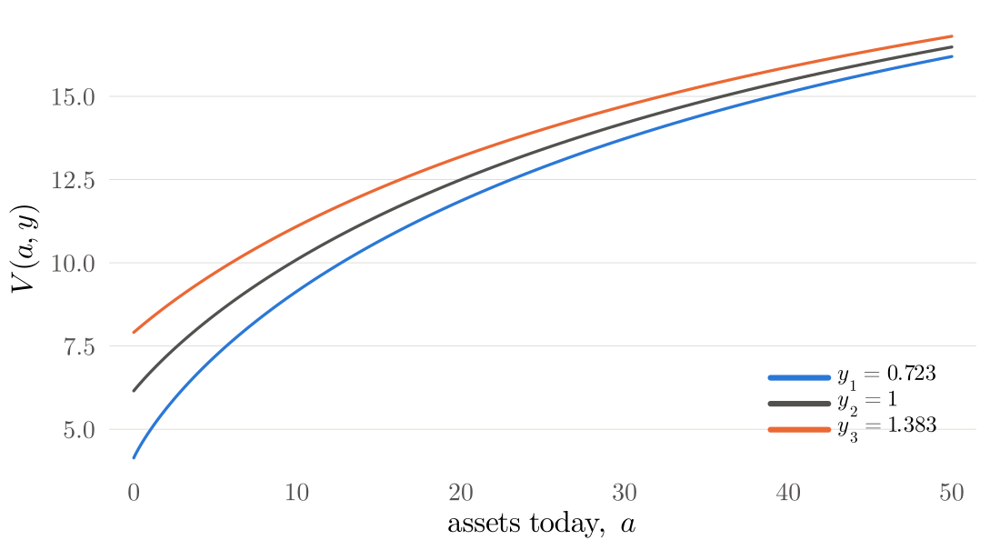
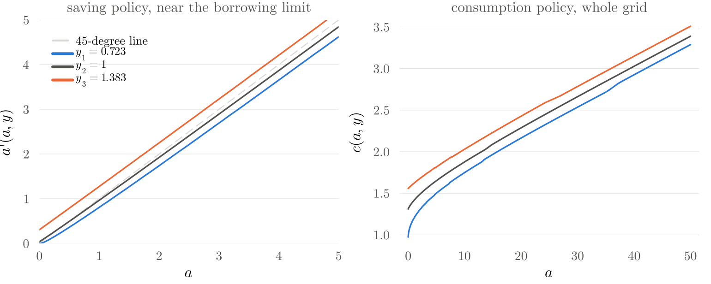

EC991 Topics in Macroeconomics · Week 3 Lab
Week 2's package solved a saving problem with constant income. This week's package adds the income process and a second way to do the maximisation. This page gets the code onto your laptop, says what is new, and reads each new file against the slides of Solving Aiyagari, Part 1.
As in week 2, you do not clone again. In VS Code, open your EC991 folder and choose Pull in the Source Control pane, or from a terminal:
cd EC991 # wherever you cloned it in week 1
git pullA new folder appears next to week02:
EC991/
└── week03/
└── lab/
├── week03_solving_aiyagari_part1.pdf # the tutorial slides
├── week03_lab.jl # the Pluto notebook
├── week03_code_guide.html # this page
└── EC991Week3/ # the package: all the code
├── Project.toml, Manifest.toml, README.md
├── src/
├── run/
└── test/Then copy the whole lab folder into your own repository and commit it, exactly as in week 2. The notebook finds the package through the folder next to it, so keep the two side by side.
cp -R EC991/week03/lab ec991-work/week03Copy-Item -Recurse EC991\week03\lab ec991-work\week03the folder ec991-work/week03/EC991Week3 exists and git log --oneline -1 in ec991-work shows your commit.
The structure is week 2's: a package with src/, run/ and test/, the same names for the same jobs (Household, asset_grid, bellman_step!, solve_vfi, Solution). What changes is the problem, and with it five things:
| New | Where | Why |
|---|---|---|
| one more state, $y$: $V$ is an $n_a \times n_y$ matrix | bellman.jl, vfi.jl | income is now risky |
| a transition matrix $P$; the expectation is $V P^\top$ | bellman.jl | slide 23 |
| two ways to discretise the AR(1): Tauchen and Rouwenhorst | markov.jl | slides 10 to 18 |
| two interpolants: linear and the natural cubic spline | interpolation.jl | slides 27 to 29 |
| a one-dimensional optimiser: golden section and Brent | optimise.jl | slides 26 and 32 |
The household now takes an interest rate $r$ and a wage $w$ instead of a fixed income. The lab default is $r = 0.03$, and $w$ follows from the firm's first-order conditions through w_from_r, which week 5 reuses when $r$ is solved for. The other defaults are $\beta = 0.96$, $\gamma = 2$ and $\phi = 0$.
The package uses no packages beyond Plots. The interpolants and optimisers are written out in a few lines each, as the Bellman step was in week 2, so you can read exactly what they do.
The rules are week 2's: src/ never plots or prints, run/ holds no model logic, test/ checks against known answers. The files in src/ are in the order of the slides:
| File | What it does | Slides |
|---|---|---|
household.jl | $\beta, \gamma, \phi, r, w$, $R = 1 + r$, CRRA utility, w_from_r | 2 |
grids.jl | the asset grid, equal or growth-rate spacing | 6 to 9 |
markov.jl | Tauchen, Rouwenhorst, stationary distribution, chain moments, simulation | 10 to 18 |
bellman.jl | one Bellman step by grid search | 21 to 25 |
interpolation.jl | LinearInterp and CubicSpline | 27 to 29 |
optimise.jl | golden_section and brent | 26 |
bellman_interp.jl | one Bellman step by interpolate-then-optimise | 26, 32 |
vfi.jl | the initial guess and the iteration, for either step | 24 |
checks.jl | chain against AR(1), monotone policy, the gap between two policies | 18, 33 |
The marker comments # >>> name and # <<< name are back too: the notebook uses them to show each block next to its maths.
Both functions turn $\log y' = \rho \log y + \sigma \varepsilon$ into a grid logy $= (\log y_1, \dots, \log y_{n_y})$ and a transition matrix P, with P[j, k] the probability of moving from $y_j$ to $y_k$. Each row sums to one.
The end points are $-\log y_1 = \log y_{n_y} = m\, \sigma/\sqrt{1-\rho^2}$ with $m = 3$, the points are a distance $d$ apart, and $P_{jk}$ is the area of the conditional density in the bin around $\log y_k$:
$$P_{jk} = \Phi\!\left(\frac{\log y_k - \rho \log y_j + d/2}{\sigma}\right) - \Phi\!\left(\frac{\log y_k - \rho \log y_j - d/2}{\sigma}\right).$$function tauchen(n_y, ρ, σ; m = 3.0)
logy_max = m * σ / sqrt(1 - ρ^2)
logy = collect(range(-logy_max, logy_max; length = n_y))
d = logy[2] - logy[1]
P = zeros(n_y, n_y)
for j in 1:n_y
μ = ρ * logy[j] # mean of log y' given log y_j
P[j, 1] = normal_cdf((logy[1] - μ + d / 2) / σ)
P[j, n_y] = 1 - normal_cdf((logy[n_y] - μ - d / 2) / σ)
for k in 2:n_y-1
P[j, k] = normal_cdf((logy[k] - μ + d / 2) / σ) - normal_cdf((logy[k] - μ - d / 2) / σ)
end
end
return logy, P
endμ is the mean of tomorrow's log income given today's, $\rho \log y_j$.normal_cdf is $\Phi$. Base Julia has no error function, so the package carries a standard approximation accurate to about $10^{-7}$.The end points are $\pm\sqrt{n_y - 1}\, \sigma/\sqrt{1-\rho^2}$. The matrix starts at $2 \times 2$ with $p = (1+\rho)/2$ on the diagonal and grows one state at a time:
function rouwenhorst(n_y, ρ, σ)
p = (1 + ρ) / 2
logy_max = sqrt(n_y - 1) * σ / sqrt(1 - ρ^2)
P = [p 1-p; 1-p p]
for k in 3:n_y
Z = zeros(k, k)
Z[1:k-1, 1:k-1] .+= p .* P
Z[1:k-1, 2:k] .+= (1 - p) .* P
Z[2:k, 1:k-1] .+= (1 - p) .* P
Z[2:k, 2:k] .+= p .* P
Z[2:k-1, :] ./= 2
P = Z
end
return collect(range(-logy_max, logy_max; length = n_y)), P
end.+= are the four corners of the backup slide: $p P$ top left, $(1-p) P$ top right and bottom left, $p P$ bottom right.Z[2:k-1, :] ./= 2 halves the interior rows, which received two contributions, so every row sums to one.chain_moments(logy, P) returns the chain's standard deviation and autocorrelation under its stationary distribution, from stationary(P). The script run/discretise_ar1.jl prints them next to the AR(1)'s:
Rouwenhorst matches both moments exactly at every $\rho$. At $\rho = 0.99$, Tauchen's middle state is absorbing, $P_{33} = 1.000$: the chain never moves (slide 15).
The grid starts at the borrowing limit, $a_1 = -\phi$, and ends at $a_{n_a}$, an upper bound that must never bind. Growth-rate spacing (slide 8) makes each gap $1 + \nu$ times the previous one:
$$a_i = a_1 + \big(a_{n_a} - a_1\big)\, \frac{(1+\nu)^{i-1} - 1}{(1+\nu)^{n_a - 1} - 1}, \qquad i = 1, \dots, n_a .$$function asset_grid(n_a, a_max; ϕ = 0.0, spacing = :growth, ν = 0.02)
a_1 = -ϕ
spacing === :equal && return collect(range(a_1, a_max; length = n_a))
spacing === :growth || throw(ArgumentError("spacing must be :equal or :growth"))
return [a_1 + (a_max - a_1) * ((1 + ν)^(i - 1) - 1) / ((1 + ν)^(n_a - 1) - 1) for i in 1:n_a]
endThe comprehension on the last line is the formula, one $i$ at a time. The lab default is asset_grid(300, 50.0): 300 points on $[0, 50]$ with $\nu = 0.02$, so the first gap is 0.003 and the last is about 1. run/compare_grids.jl solves the problem on both grids:
The growth-rate grid gives up precision at the top, where its gaps approach 1, to gain it near the constraint, where the policy bends.
bellman_step! (slides 23 and 25)Week 2's double loop, with one more loop over income today and the expectation computed once, as a matrix product:
$$V^{n+1}_{ij} = \max_k \ u\big(R a_i + w y_j - a_k\big) + \beta \sum_m V^n_{km} P_{jm}, \qquad \sum_m V^n_{km} P_{jm} = (V^n P^\top)_{kj} .$$function bellman_step!(V1, pol, V0, hh::Household, a, y, P)
(; β, R, w) = hh
EV = V0 * P' # EV[k, j] = E[V0(a_k, y') | y_j]
n_a, n_y = length(a), length(y)
for j in 1:n_y, i in 1:n_a # state (a_i, y_j)
best, kbest = -Inf, 1
for k in 1:n_a # candidate a'_k
c = R * a[i] + w * y[j] - a[k]
c <= 0 && continue # infeasible: value -∞, never chosen
v = utility(c, hh) + β * EV[k, j]
if v > best
best, kbest = v, k
end
end
V1[i, j], pol[i, j] = best, kbest
end
return V1, pol
endEV = V0 * P' computes every continuation value at once: row $k$ is the choice $a_k$, column $j$ is income today.(; β, R, w) = hh unpacks three fields of the household.pol[i, j] stores the index of the best $a_k$, so the policy can only take grid values. That is the issue on slide 25.LinearInterp (slide 28)For $a_k \leq a' \leq a_{k+1}$: $\hat V(a') = V_k + \frac{a' - a_k}{a_{k+1} - a_k}(V_{k+1} - V_k)$.
struct LinearInterp{T<:Real}
x::Vector{T}
v::Vector{T}
end
function (f::LinearInterp)(x)
k = clamp(searchsortedlast(f.x, x), 1, length(f.x) - 1)
return f.v[k] + (x - f.x[k]) / (f.x[k+1] - f.x[k]) * (f.v[k+1] - f.v[k])
endA struct that you can call like a function: f = LinearInterp(a, V[:, 1]) stores the points, and f(2.5) evaluates. searchsortedlast finds the gap $k$ with $a_k \leq a'$.
CubicSpline (slide 29, backup slides 35 and 36)Building the spline solves one tridiagonal linear system for the curvatures $M_k$, then turns them into the four coefficients of each piece. Calling it only finds the gap and evaluates a cubic:
struct CubicSpline{T<:Real}
x::Vector{T}
b::Matrix{T} # b[k, :] = (b_k0, b_k1, b_k2, b_k3)
end
function CubicSpline(x::AbstractVector, v::AbstractVector)
n = length(x)
h = diff(x)
Δ = diff(v) ./ h
# the tridiagonal system for M_2, ..., M_{n-1}, solved by forward
# elimination and back substitution
M = zeros(n)
if n > 2
lo = h[2:n-2] # below the diagonal
di = [2 * (h[k-1] + h[k]) for k in 2:n-1]
up = h[2:n-2] # above the diagonal
rhs = [6 * (Δ[k] - Δ[k-1]) for k in 2:n-1]
for k in 2:n-2
μ = lo[k-1] / di[k-1]
di[k] -= μ * up[k-1]
rhs[k] -= μ * rhs[k-1]
end
m = n - 2
M[m+1] = rhs[m] / di[m]
for k in m-1:-1:1
M[k+1] = (rhs[k] - up[k] * M[k+2]) / di[k]
end
end
b = zeros(n - 1, 4)
for k in 1:n-1
b[k, 1] = v[k]
b[k, 2] = Δ[k] - h[k] * (2M[k] + M[k+1]) / 6
b[k, 3] = M[k] / 2
b[k, 4] = (M[k+1] - M[k]) / (6h[k])
end
return CubicSpline(collect(float.(x)), b)
end
function (f::CubicSpline)(x)
k = clamp(searchsortedlast(f.x, x), 1, length(f.x) - 1)
t = x - f.x[k]
return f.b[k, 1] + t * (f.b[k, 2] + t * (f.b[k, 3] + t * f.b[k, 4]))
endgolden_section and brentBoth maximise a function of one variable on an interval and return the maximiser, the maximum and the number of evaluations. Golden section shrinks the bracket by the same factor, 0.618, every step:
function golden_section(f, lo, hi; tol = 1e-8)
g = (sqrt(5) - 1) / 2
x1, x2 = hi - g * (hi - lo), lo + g * (hi - lo)
f1, f2 = f(x1), f(x2)
evals = 2
while hi - lo > tol
if f1 >= f2 # the peak is in [lo, x2]
hi, x2, f2 = x2, x1, f1
x1 = hi - g * (hi - lo); f1 = f(x1)
else # the peak is in [x1, hi]
lo, x1, f1 = x1, x2, f2
x2 = lo + g * (hi - lo); f2 = f(x2)
end
evals += 1
end
return f1 >= f2 ? (x1, f1, evals) : (x2, f2, evals)
endBrent's method tries a parabola through the best three points first and falls back on a golden-section step when the parabola cannot be trusted; near a smooth peak it needs far fewer evaluations. The code is longer and you do not need to follow every line; the docstring in src/optimise.jl explains each part.
bellman_step_interp! (slides 26 and 32)function bellman_step_interp!(V1, apol, V0, hh::Household, a, y, P;
interp = :linear, routine = :brent, tol = 1e-8)
(; β, R, w) = hh
n_a, n_y = length(a), length(y)
build = interp === :linear ? LinearInterp : interp === :cubic ? CubicSpline :
throw(ArgumentError("interp must be :linear or :cubic"))
search = routine === :brent ? brent : routine === :golden ? golden_section :
throw(ArgumentError("routine must be :brent or :golden"))
V̂ = [build(a, V0[:, m]) for m in 1:n_y] # once per iteration, per y_m
c_min = 1e-10
for j in 1:n_y, i in 1:n_a
cash = R * a[i] + w * y[j]
φ(ap) = utility(cash - ap, hh) + β * sum(P[j, m] * V̂[m](ap) for m in 1:n_y)
hi = min(a[end], cash - c_min)
best_a, best_v = a[1], φ(a[1]) # the corner: constraint binds
if hi > a[1]
x, fx, _ = search(φ, a[1], hi; tol)
fx > best_v && ((best_a, best_v) = (x, fx))
end
V1[i, j], apol[i, j] = best_v, best_a
end
return V1, apol
endV̂ holds one interpolant per income level tomorrow, built at the start of the step.φ calls all three inside the optimiser, at every trial $a'$.φ(a[1]) catches the states where the borrowing constraint binds.apol[i, j] is the chosen $a'$ itself, not an index.solve_vfi is week 2's loop with two changes: it carries $y$ and $P$, and it takes the Bellman step as an argument, so the same function runs grid search or interpolate-then-optimise.
function solve_vfi(hh::Household, a, y, P; step = bellman_step!, tol = 1e-7, maxiter = 1200, kwargs...)
V0 = initial_guess(hh, a, y)
V1 = similar(V0)
gridsearch = step === bellman_step!
pol = gridsearch ? ones(Int, size(V0)) : similar(V0) # index k, or a' itself
distances = eltype(V0)[]
for n in 1:maxiter
step(V1, pol, V0, hh, a, y, P; kwargs...) # V1 = T V0
d = maximum(abs.(V1 .- V0))
push!(distances, d)
if d < tol # Step 4: converged
apol = gridsearch ? a[pol] : copy(pol)
cpol = hh.R .* a .+ hh.w .* y' .- apol
return Solution(collect(a), collect(y), copy(V1), gridsearch ? copy(pol) : nothing,
apol, cpol, n, distances)
end
V0, V1 = V1, V0 # the update becomes the guess
end
error("value function iteration did not converge in $maxiter iterations")
endsol = solve_vfi(hh, a, y, P) # grid search
sol_lin = solve_vfi(hh, a, y, P; step = bellman_step_interp!) # linear + Brent
sol_cub = solve_vfi(hh, a, y, P; step = bellman_step_interp!, interp = :cubic)
sol_gold = solve_vfi(hh, a, y, P; step = bellman_step_interp!, routine = :golden)Keywords after step are passed on to the step. The Solution holds V, apol, cpol, the iteration count and every distance; pol holds grid indices after grid search and is nothing otherwise.
checks.jl has three functions: chain_vs_ar1 for slide 18, policy_monotone for what theory says about the policy (increasing in $a$ and in $y$), and compare_policies, which reads one policy off at the other's grid points by linear interpolation and reports the largest gap.
From inside ec991-work/week03/EC991Week3:
julia --project=. -e "using Pkg; Pkg.instantiate()" # once
julia --project=. run/discretise_ar1.jl # Tauchen vs Rouwenhorst
julia --project=. run/solve_household.jl # the 3 x 3 example, then VFI by grid search
julia --project=. run/compare_grids.jl # equal vs growth-rate spacing
julia --project=. run/compare_maximisation.jl # grid search vs interpolate-then-optimise
julia --project=. run/make_figures.jl # the figures on the slides
julia --project=. -e "using Pkg; Pkg.test()" # the checksPlots go to EC991Week3/output/.
The two interpolated policies agree with each other to about 0.01, and each differs from grid search by less than one grid gap. Brent finds the peak in 13 evaluations where golden section needs 44.
The value function rises in assets and in income, and flattens as assets grow: an extra unit of wealth matters less to a household that already has a lot.

The saving policy sits above the 45-degree line when income is high and below it when income is low: households build a buffer in good times and draw it down in bad ones. With low income and few assets the borrowing limit binds, $a'(a, y_1) = 0$. Consumption rises with assets and with income.

run/make_figures.jl.Every test checks against a known answer: Rouwenhorst's moments exactly, the matrix and grid on slides 16 and 17, Tauchen's absorbing state at $\rho = 0.99$, the worked number 11 from slide 28, the contraction, the shape of the policy, and the gap between the two maximisation methods.
Open ec991-work/week03/week03_lab.jl in Pluto, as in week 2. It follows the slides section by section, with the source of each function next to its maths, and ends with four exercises, one of them Chebyshev interpolation from backup slide 37.
| You see | Cause and fix |
|---|---|
| A Tauchen chain that never changes state | At high $\rho$ the grid is so wide that each bin holds nearly all of the conditional density: the state is absorbing. Use Rouwenhorst for $\rho$ above about 0.9 (slide 15). |
-Inf in V | A state with no affordable choice: $R a_i + w y_j \leq a_1$. With $\phi = 0$ and positive income it cannot happen; with a large $\phi$ and low income it can. Check the borrowing limit against the lowest income. |
| The policy sits on $a_{n_a}$ | The upper bound binds: households want more assets than the grid allows. Raise a_max, or check $\beta R$: close to 1 (for example $r = 0.04$ with $\beta = 0.96$) and saving may not stop inside any reasonable grid. |
| The spline policy wiggles near the constraint | The value function bends sharply near $a_1$, and a cubic spline can overshoot there. Add points near the constraint (growth-rate spacing), or use linear interpolation, which cannot overshoot. |
Package EC991Week3 not found | Julia is in your default environment. Run from inside EC991Week3/ with --project=.. |
Errors when you run julia week03_lab.jl | The notebook is meant for Pluto, as in weeks 1 and 2. Open it there. |
value function iteration did not converge | Usually $\beta \geq 1$, or a step that returns -Inf everywhere. Check hh and the grid. |